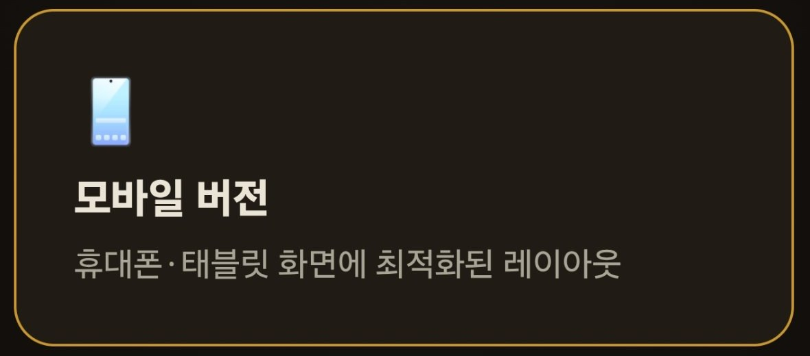
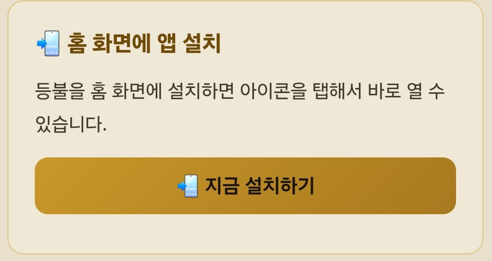
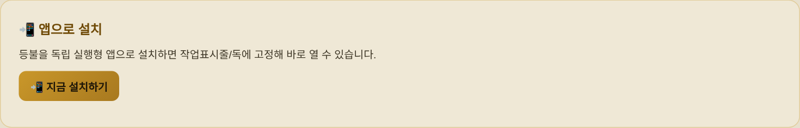

🪔 등불 설치 안내
그림을 누르면 등불이 열립니다. 설치하면 아이콘만 눌러 바로 쓸 수 있습니다.

▲ 누르면 앱 열기 · 주소: goodmorning0579-max.github.io/deungbul-app/
📱 휴대폰에 설치
⚠️ 카카오톡에서 연 화면에서는 설치 버튼이 나오지 않습니다.
카톡 안의 브라우저는 앱 설치를 지원하지 않습니다. 오른쪽 아래 ⋮ → “다른 브라우저로 열기”(또는 “Chrome에서 열기”, 삼성 인터넷)를 눌러 연 다음 설치하세요.
카톡 안의 브라우저는 앱 설치를 지원하지 않습니다. 오른쪽 아래 ⋮ → “다른 브라우저로 열기”(또는 “Chrome에서 열기”, 삼성 인터넷)를 눌러 연 다음 설치하세요.
1
모바일 버전 선택
위 그림을 눌러 앱을 열고 “모바일 버전”을 누릅니다.
위 그림을 눌러 앱을 열고 “모바일 버전”을 누릅니다.

2
아래 줄의 설정 누르기
화면 맨 아래 줄에서 “설정”을 누릅니다.
화면 맨 아래 줄에서 “설정”을 누릅니다.
3
지금 설치하기
“홈 화면에 앱 설치” 칸의 금색 “지금 설치하기” 버튼을 누르고, 나오는 창에서 “설치”를 누릅니다.
“홈 화면에 앱 설치” 칸의 금색 “지금 설치하기” 버튼을 누르고, 나오는 창에서 “설치”를 누릅니다.

4
홈 화면 아이콘으로 열기
휴대폰 홈 화면의 등불 아이콘을 누르면 앱처럼 열립니다.
휴대폰 홈 화면의 등불 아이콘을 누르면 앱처럼 열립니다.
아이폰(사파리)은 “지금 설치하기” 대신 공유 버튼 → “홈 화면에 추가”를 누릅니다.
🖥️ PC에 설치 (크롬·엣지)
1
데스크탑 버전 선택
위 그림을 눌러 앱을 열고 “데스크탑 버전”을 누릅니다.
위 그림을 눌러 앱을 열고 “데스크탑 버전”을 누릅니다.
2
왼쪽 메뉴의 설정 누르기
화면 왼쪽 메뉴 맨 아래의 “설정”을 누릅니다.
화면 왼쪽 메뉴 맨 아래의 “설정”을 누릅니다.
3
앱으로 설치
“앱으로 설치” 칸의 “지금 설치하기” 버튼을 누르고, 나오는 창에서 “설치”를 누릅니다.
“앱으로 설치” 칸의 “지금 설치하기” 버튼을 누르고, 나오는 창에서 “설치”를 누릅니다.

4
아이콘으로 열기
바탕화면이나 시작 메뉴의 등불 아이콘을 누르면 별도 창으로 열립니다.
바탕화면이나 시작 메뉴의 등불 아이콘을 누르면 별도 창으로 열립니다.
“지금 설치하기” 버튼이 보이지 않으면, 브라우저 주소창 오른쪽의 설치 아이콘(⊕ 또는 화면 모양)을 누르거나 메뉴(⋮)에서 “앱 설치”를 선택하세요.